Soru 1Cevap: D
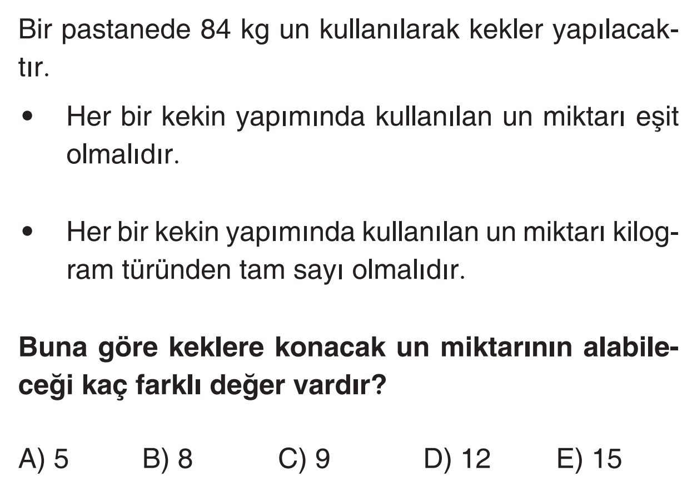
Çözüm
- Kek başına un miktarı 84'ün pozitif böleni.
- $84=2^2\cdot3\cdot7$.
- $3\cdot2\cdot2=12$ → D.
Cevap: D
Soru 2Cevap: C
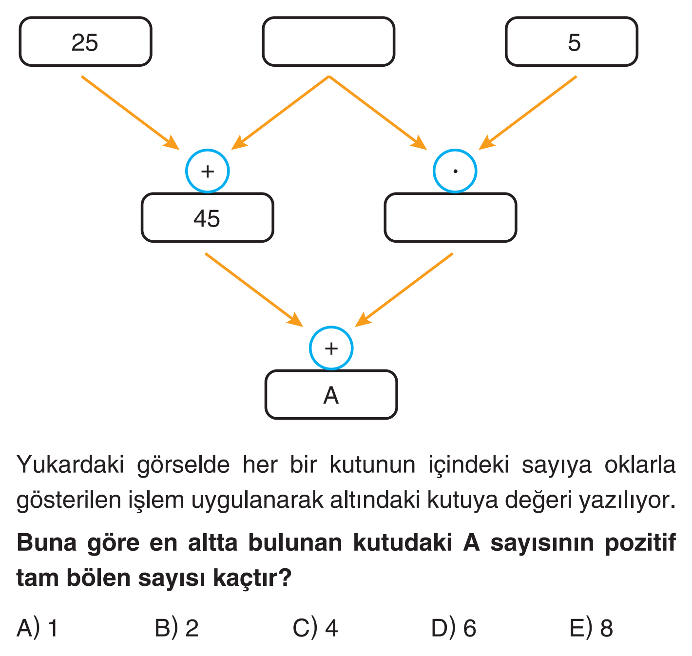
Çözüm
- $25+\square=45 \Rightarrow \square=20$; sağ kutu $20\cdot5=100$.
- $A=45+100=145=5\cdot29$.
- Pozitif bölen sayısı $2\cdot2=4$ → C.
Cevap: C
Soru 3Cevap: C
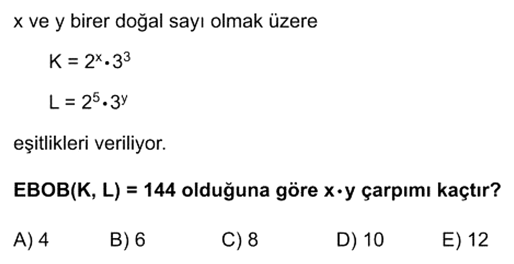
Çözüm
- $144=2^4\cdot3^2$.
- EBOB'da küçük üsler: $\min(x,5)=4 \Rightarrow x=4$; $\min(3,y)=2 \Rightarrow y=2$.
- $x\cdot y=8$ → C.
Cevap: C
Soru 4Cevap: D
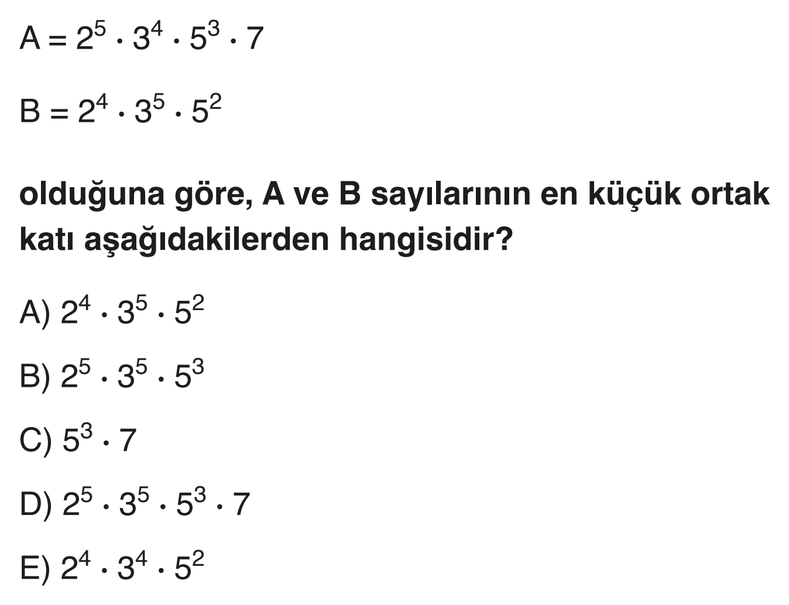
Çözüm
- EKOK: her asalın büyük üssü.
- $2^5$, $3^5$, $5^3$, $7$.
- $2^5\cdot3^5\cdot5^3\cdot7$ → D.
Cevap: D
Soru 5Cevap: D
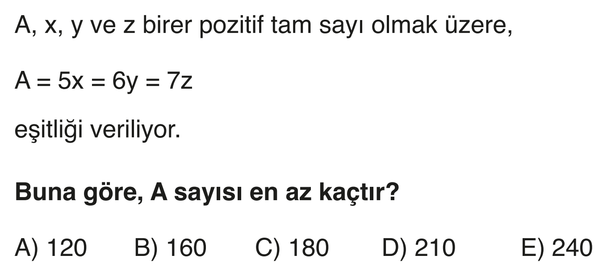
Çözüm
- $A$, 5, 6 ve 7'nin ortak katı.
- En küçük $\text{EKOK}(5,6,7)=210$.
- → D.
Cevap: D
Soru 6Cevap: B
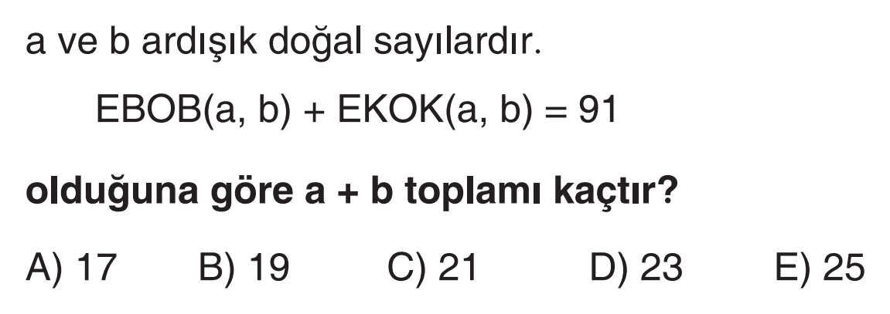
Çözüm
- Ardışık sayılar: $\text{EBOB}=1$, $\text{EKOK}=ab$.
- $1+ab=91 \Rightarrow ab=90=9\cdot10$.
- $a+b=19$ → B.
Cevap: B
Soru 7Cevap: D
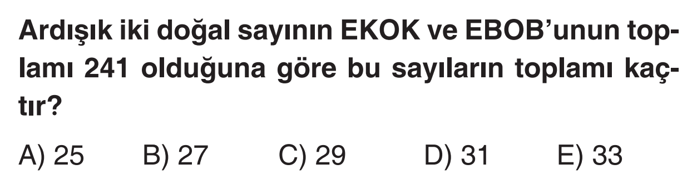
Çözüm
- Ardışık: $n(n+1)+1=241$.
- $n(n+1)=240=15\cdot16$.
- $31$ → D.
Cevap: D
Soru 8Cevap: D
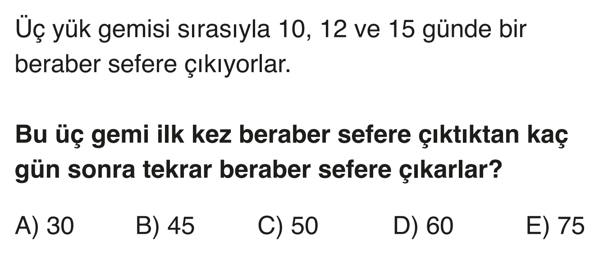
Çözüm
- Gemiler birlikte $\text{EKOK}(10,12,15)$ günde bir çıkar.
- $=60$.
- 60 gün sonra → D.
Cevap: D
Soru 9Cevap: C
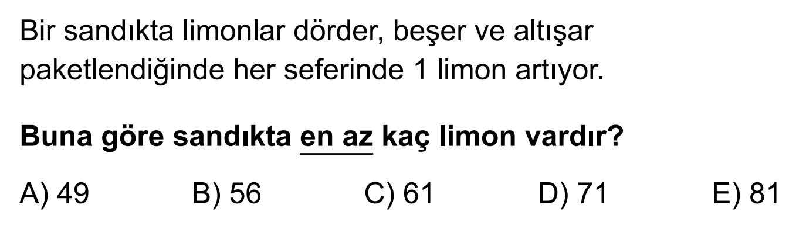
Çözüm
- $N-1$, 4, 5 ve 6'nın ortak katı.
- $\text{EKOK}=60 \Rightarrow N=60k+1$.
- Bir sandık limon için en az $61$ → C.
Cevap: C
Soru 10Cevap: E
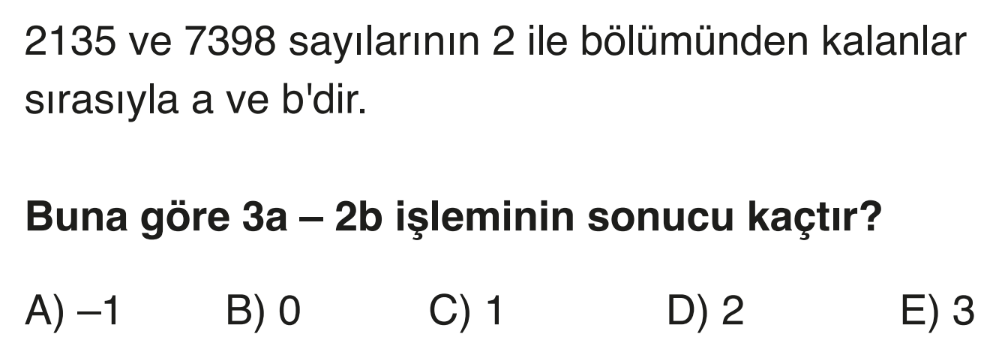
Çözüm
- $2135$ tek → $a=1$; $7398$ çift → $b=0$.
- $3a-2b=3$.
- → E.
Cevap: E
Soru 11Cevap: D
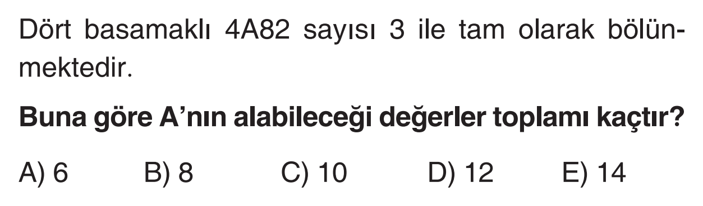
Çözüm
- $4+A+8+2=14+A$ 3'ün katı.
- $A\in\{1,4,7\}$.
- Toplam $12$ → D.
Cevap: D
Soru 12Cevap: E
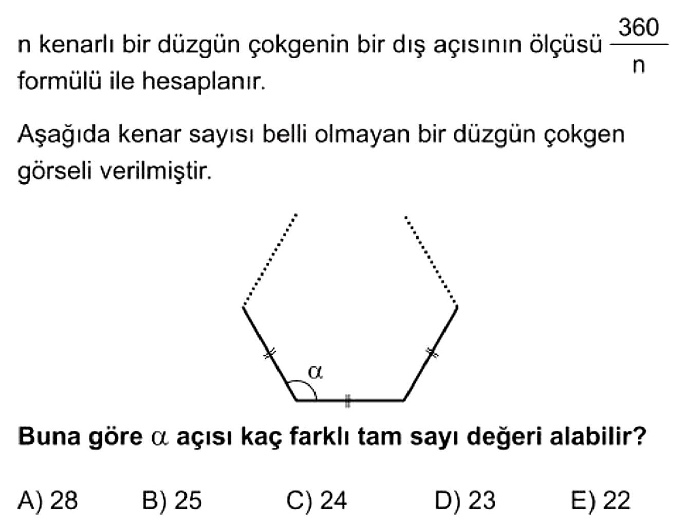
Çözüm
- Dış açı $\frac{360}n$ tam sayı → $n$, 360'ın böleni ve $n\ge3$.
- $360=2^3\cdot3^2\cdot5$ → 24 pozitif bölen; $n=1,2$ çıkar.
- 22 değer → E.
Cevap: E
Soru 13Cevap: D
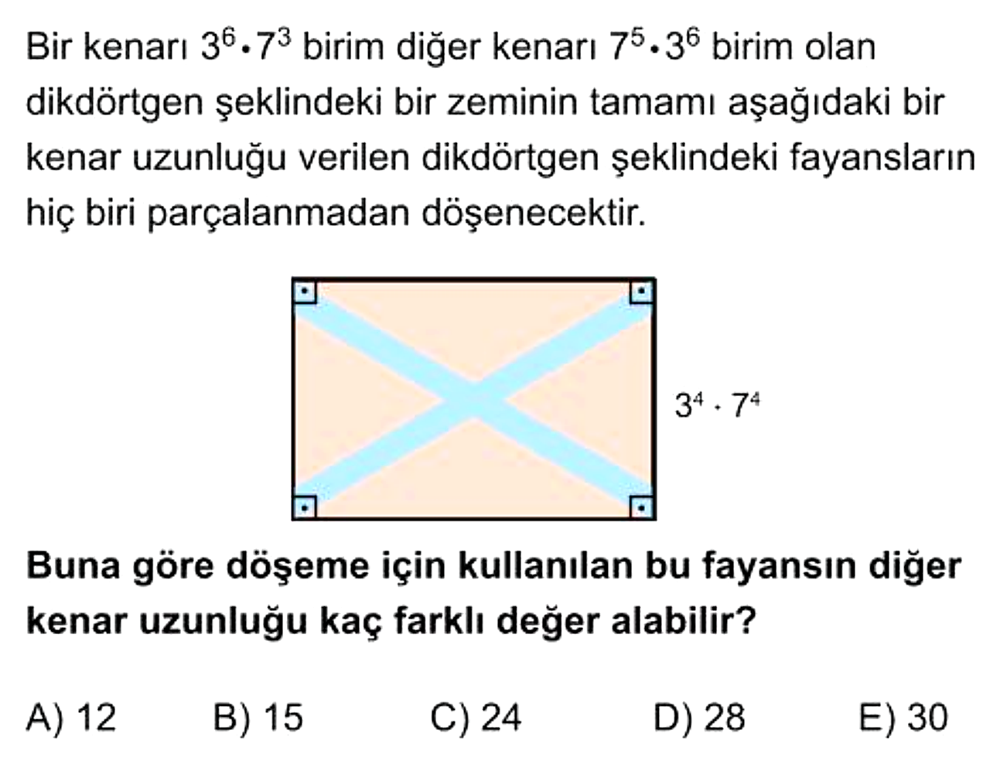
Çözüm
- Verilen fayans kenarı $3^4\cdot7^4$ yalnız $7^5\cdot3^6$'lık kenarı böler; bu kenar boyunca yerleşir.
- Diğer kenar $3^6\cdot7^3$'ü bölmeli.
- Bölen sayısı $7\cdot4=28$ → D.
Cevap: D
Soru 14Cevap: E
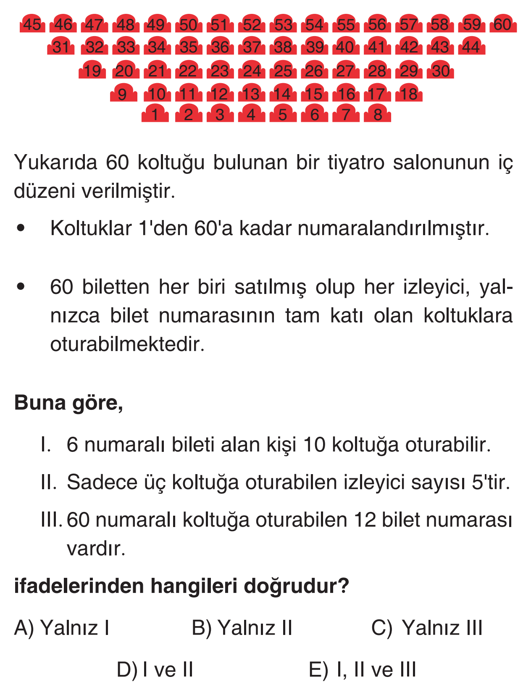
Çözüm
- I: 6'nın 60'a kadar katları 10 tane ✓.
- II: tam 3 katı olan numaralar $16,\ldots,20$ → 5 kişi ✓.
- III: 60'ın 12 pozitif böleni var ✓ → I, II ve III → E.
Cevap: E
Soru 15Cevap: C
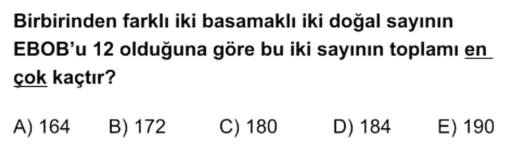
Çözüm
- Sayılar $12m$, $12n$; $m,n$ aralarında asal, iki basamaklı.
- En büyükler: $96=12\cdot8$ ve $84=12\cdot7$ ($\text{EBOB}(8,7)=1$).
- $180$ → C.
Cevap: C
Soru 16Cevap: A
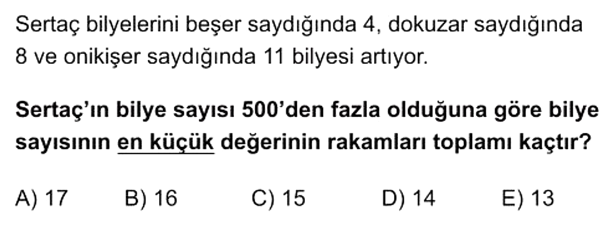
Çözüm
- Beşer saydığında 4, dokuzar 8, on ikişer 11 artıyor → $N+1$, 5, 9 ve 12'nin ortak katı.
- $\text{EKOK}=180 \Rightarrow N=180k-1$; 500'den büyük en küçük $539$.
- $5+3+9=17$ → A.
Cevap: A
Soru 17Cevap: C
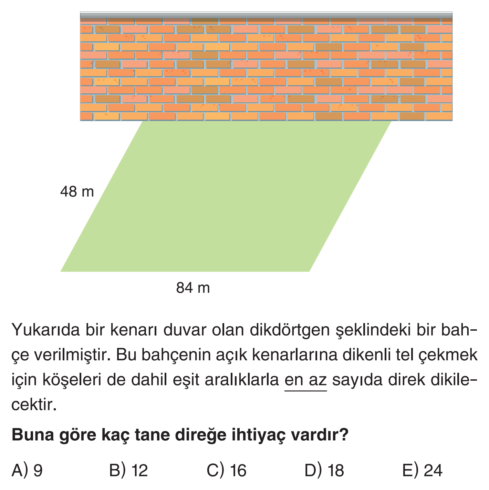
Çözüm
- Duvar 84 m'lik bir kenar; tel çekilen açık yol $48+84+48=180$ m.
- Aralık $\text{EBOB}(48,84)=12$ m.
- Açık yol: $\frac{180}{12}+1=16$ direk → C.
Cevap: C
Soru 18Cevap: D
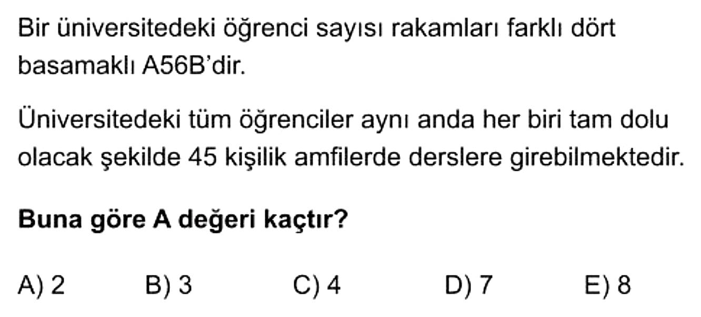
Çözüm
- 45 kişilik amfiler tam dolu → $\overline{A56B}$ 5 ve 9 ile bölünür.
- $B=0 \Rightarrow A=7$ ($7560$); $B=5 \Rightarrow A=2$ (5 tekrarlanır).
- $A=7$ → D.
Cevap: D
Soru 19Cevap: E
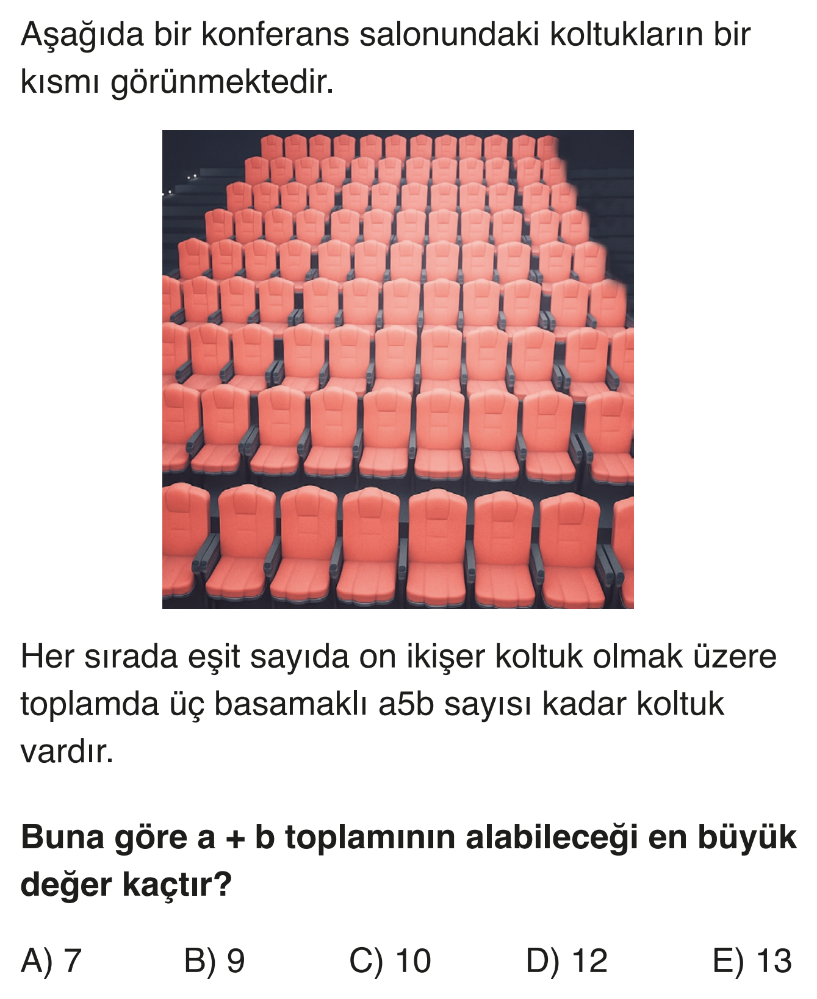
Çözüm
- Sıralar 12'şer → $\overline{a5b}$ 12 ile bölünür: $b\in\{2,6\}$.
- 3: $a+5+b$ 3'ün katı: $b=6 \Rightarrow a\in\{1,4,7\}$; $b=2 \Rightarrow a\in\{2,5,8\}$.
- En büyük $7+6=13$ → E.
Cevap: E
Soru 20Cevap: E
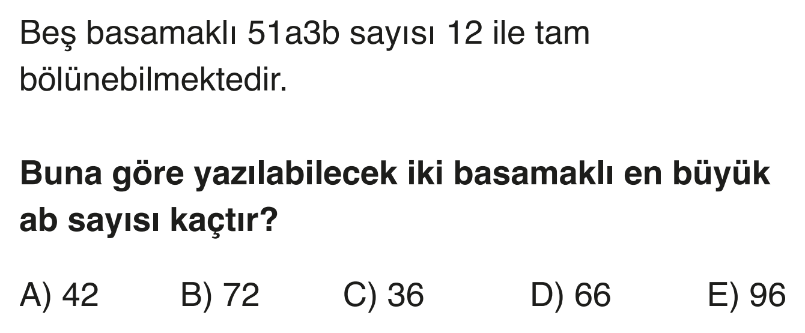
Çözüm
- 12 ile → $\overline{3b}$ 4'e: $b\in\{2,6\}$; $9+a+b$ 3'e bölünür.
- $b=6$ için $a\in\{0,3,6,9\}$.
- En büyük $\overline{ab}=96$ → E.
Cevap: E
Soru 21Cevap: A
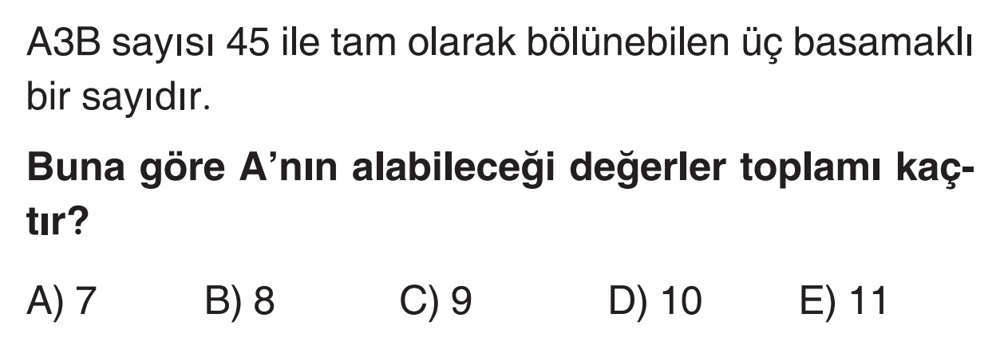
Çözüm
- 45 ile → $B\in\{0,5\}$ ve $A+3+B$ 9'un katı.
- $B=0 \Rightarrow A=6$; $B=5 \Rightarrow A=1$.
- $6+1=7$ → A.
Cevap: A
Soru 22Cevap: E
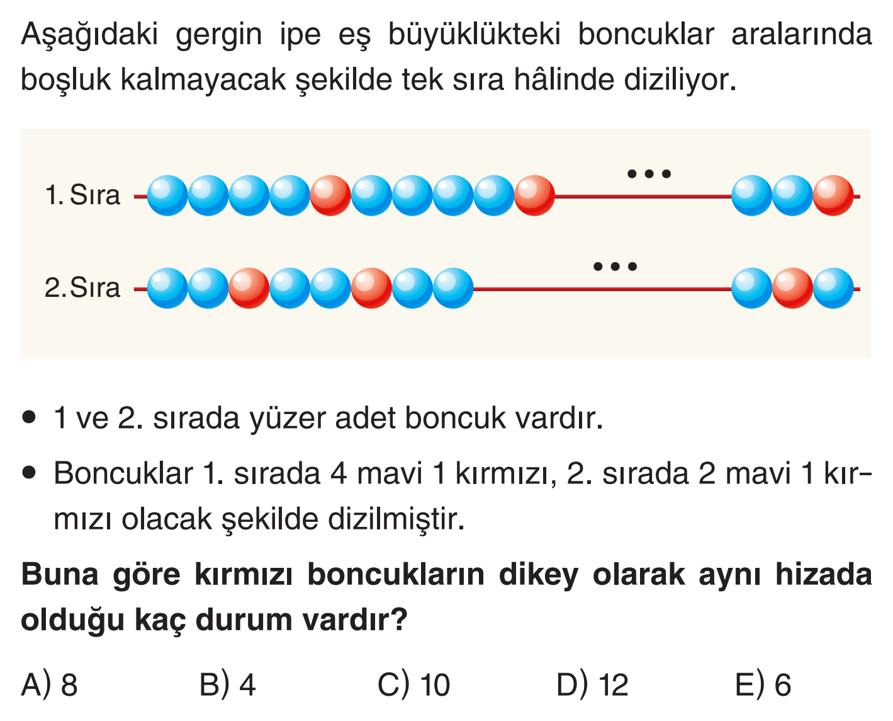
Çözüm
- 1. sırada kırmızılar 5'in katı, 2. sırada 3'ün katı sıralarda.
- Aynı hizada: 15'in katları.
- 100'e kadar $15,30,\ldots,90$ → 6 → E.
Cevap: E
Soru 23Cevap: E
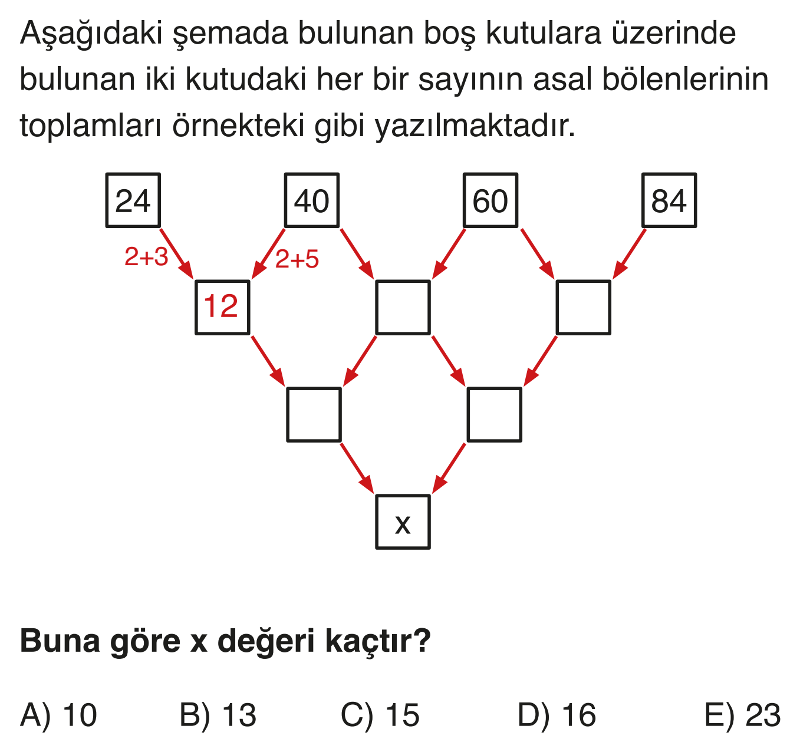
Çözüm
- Her kutu, üstündeki iki sayının farklı asal bölenleri toplamlarının toplamıdır: $40\&60 \to 7+10=17$, $60\&84 \to 10+12=22$.
- Alt sıra: $12\&17 \to 5+17=22$; $17\&22 \to 17+13=30$.
- $x$: $22\&30 \to 13+10=23$ → E.
Cevap: E
Soru 24Cevap: C
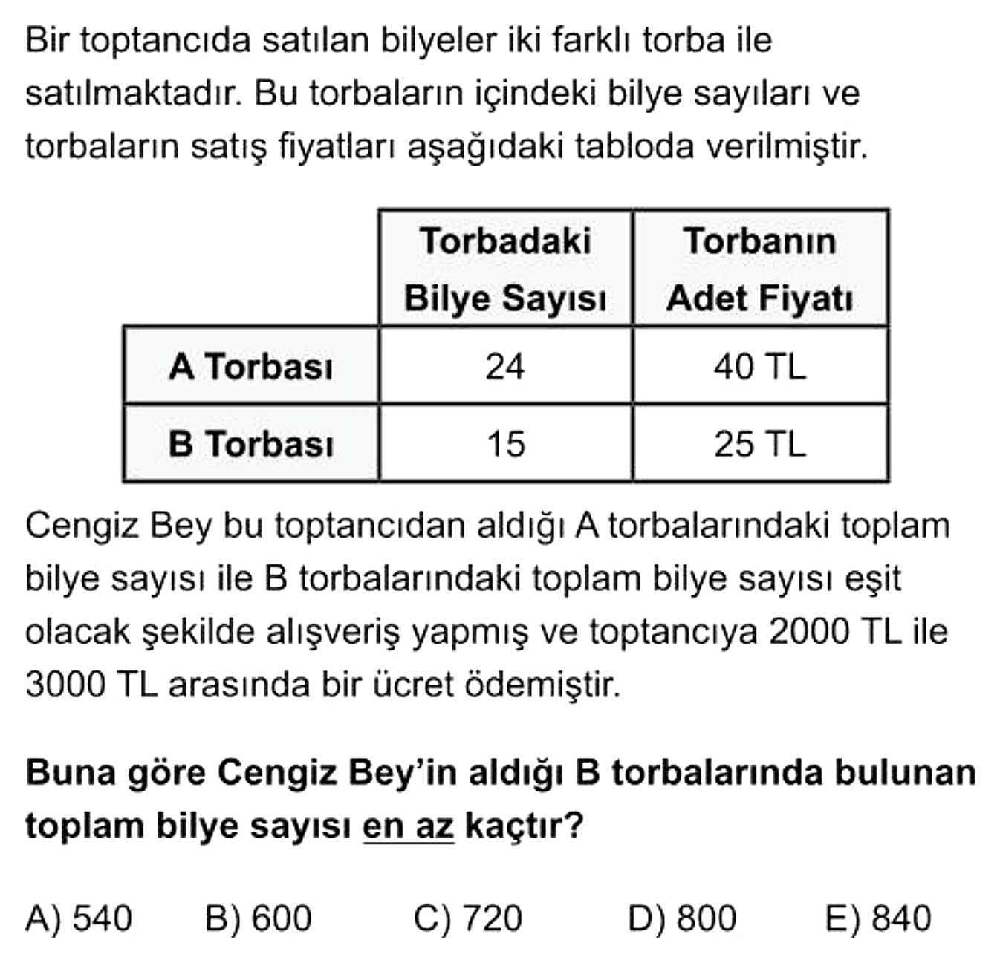
Çözüm
- Bilye toplamları eşit → $\text{EKOK}(24,15)=120$'nin katı; her 120 bilyede 5 A ($200$ TL) + 8 B ($200$ TL) = $400$ TL.
- $2000<400k<3000 \Rightarrow k=6$.
- B torbalarında $6\cdot120=720$ bilye → C.
Cevap: C
Soru 25Cevap: D
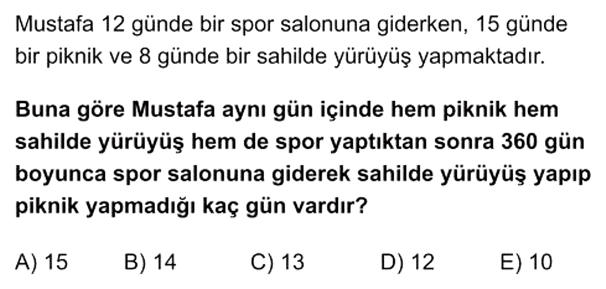
Çözüm
- Spor 12, piknik 15, sahil 8 günde bir; başlangıç günü üçü birlikte.
- Spor + sahil birlikte $\text{EKOK}(12,8)=24$ günde; bunlara piknik de eklenirse $\text{EKOK}(24,15)=120$.
- 360 günde $15-3=12$ gün → D.
Cevap: D
Soru 26Cevap: B
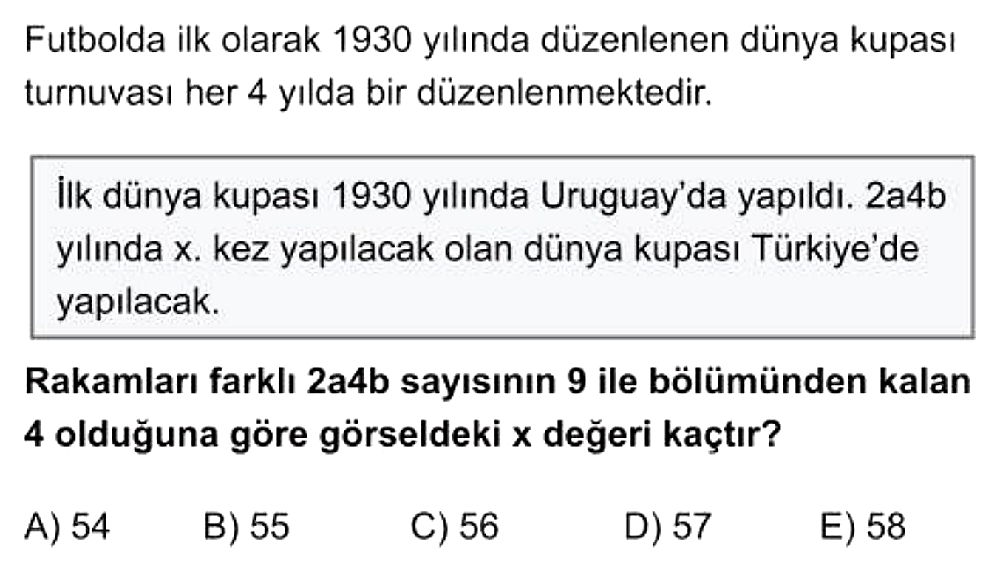
Çözüm
- Kupa yılları $1930+4(x-1)$ → $\overline{2a4b}\equiv2 \pmod 4 \Rightarrow b\in\{2,6\}$.
- 9 ile kalan 4: $a+b\equiv7$; rakamlar farklı → $b=6$, $a=1$: $2146$.
- $x=\frac{2146-1930}4+1=55$ → B.
Cevap: B
Soru 27Cevap: C
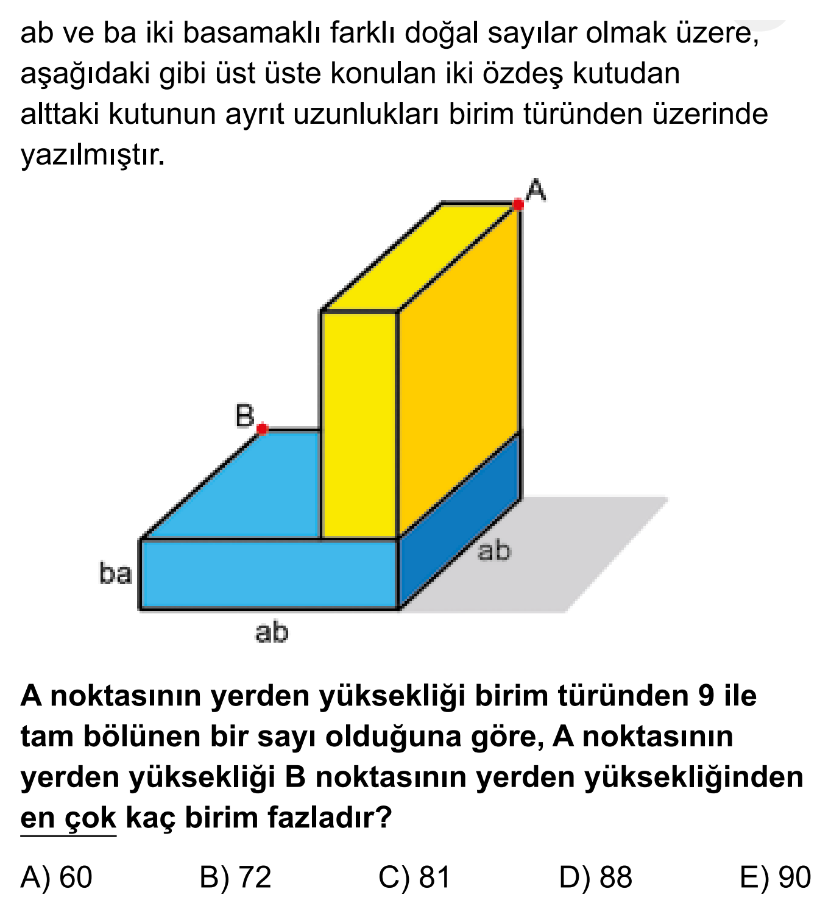
Çözüm
- B'nin yüksekliği alttaki kutunun yüksekliği $\overline{ba}$; A'nınki $\overline{ba}+\overline{ab}=11(a+b)$.
- 9 ile bölünür → $a+b=9$.
- Fark $\overline{ab}$, en çok $81$ → C.
Cevap: C
Soru 28Cevap: E
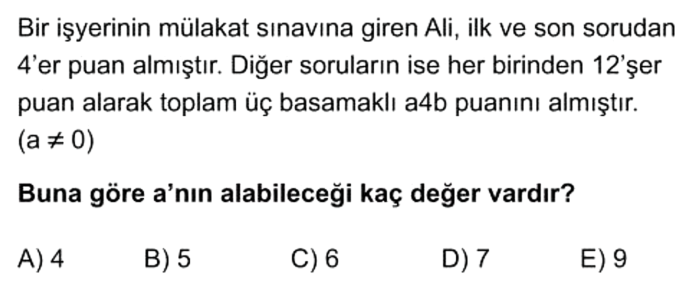
Çözüm
- Puan $8+12k=\overline{a4b}$ → 12 ile kalan 8: 4 ile kalan 0, 3 ile kalan 2.
- $\overline{4b}$ 4'ün katı → $b\in\{0,4,8\}$; $a+4+b\equiv2 \pmod 3$.
- $b=0$: $a\in\{1,4,7\}$; $b=4$: $\{3,6,9\}$; $b=8$: $\{2,5,8\}$ → 9 değer → E.
Cevap: E
Soru 29Cevap: A
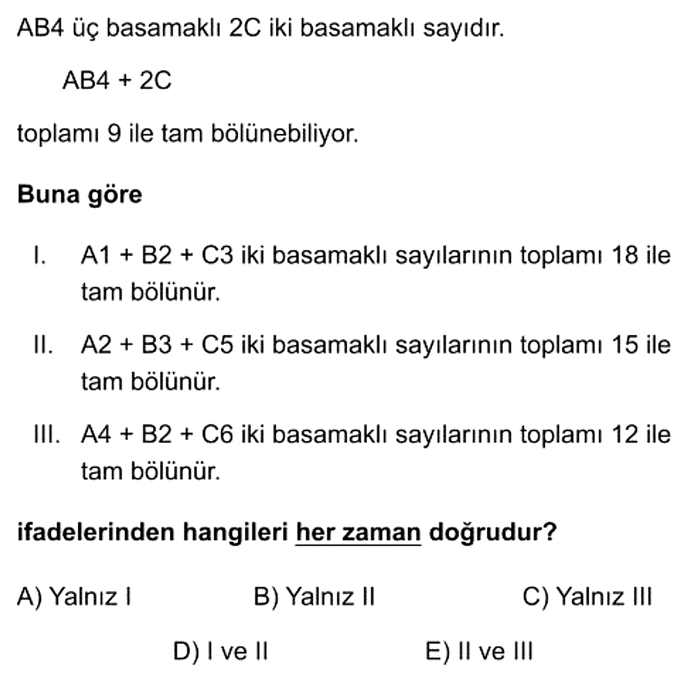
Çözüm
- $\overline{AB4}+\overline{2C}$ 9'a bölünür → $A+B+C\equiv3 \pmod 9$; $S=A+B+C$.
- I: $10S+6$ çift ve 9 ile kalan $S+6\equiv0$ → 18'e bölünür ✓. II: $10S+10\equiv S+1\equiv1 \pmod 3$ ✗.
- III: $10S+12$ 4'e bölünmesi $S$'nin çift olmasına bağlı → kesin değil → Yalnız I → A.
Cevap: A
Soru 30Cevap: C
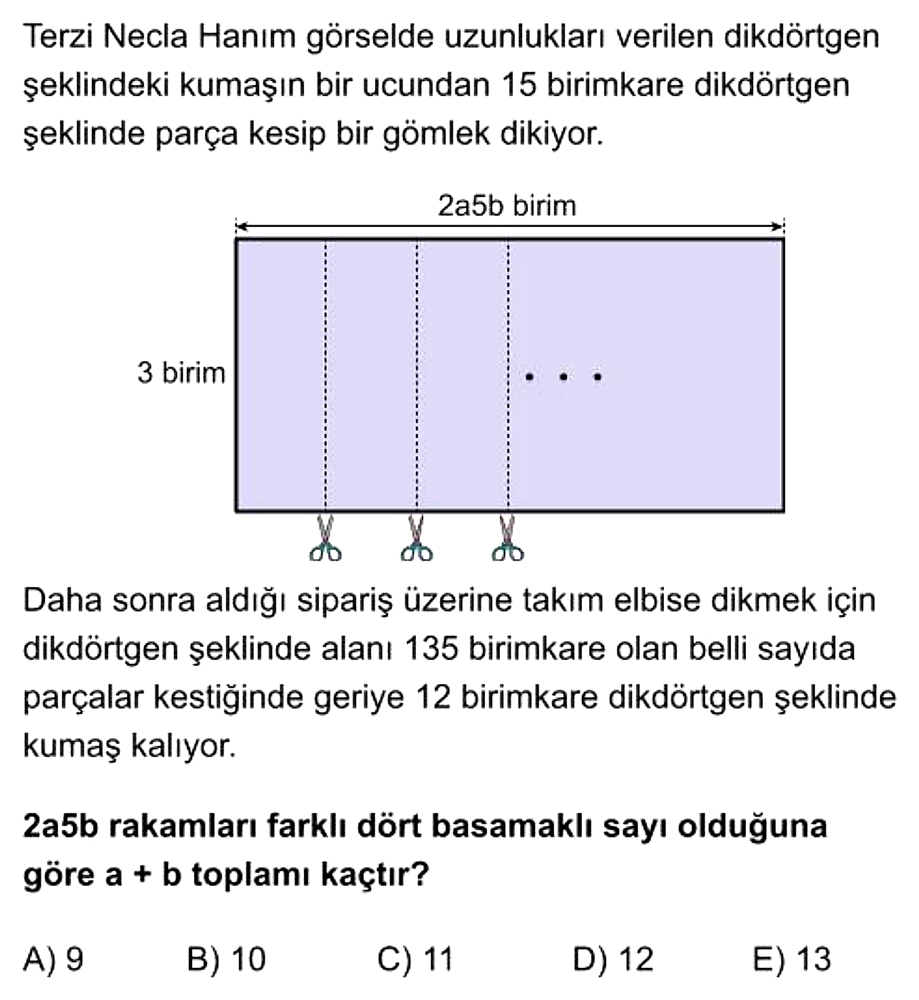
Çözüm
- Alan $3\cdot\overline{2a5b}$; 15 birimkare kesilince kalan, 135'lik parçalara bölünüp 12 artıyor: $3\cdot\overline{2a5b}=135n+27$.
- $\overline{2a5b}=45n+9$ → 5 ile kalan 4 ($b=4$), 9 ile kalan 0 ($a=7$).
- $a+b=11$ → C.
Cevap: C